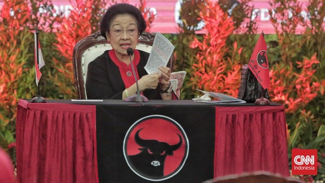

PDIP: Kasus Harun Masiku Sama Sekali Tak Terkait Ibu Ketua Umum
Purwakarta, AboutNEWS -- Ketua DPP PDIP Said Abdullah menegaskan Ketua Umumnya Megawati Soekarnoputri sama sekali tak terkait dengan kasus eks caleg PDIP di 2019 yang saat ini masih buron KPK, Harun Masiku. Pernyataan itu disampaikan Said merespons peluang KPK memanggil Ketua Umum Megawati Soekarnoputri usai Sekjen PDIP, Hasto Kristiyanto ditetapkan sebagai tersangka. Said berharap agar publik tak berspekulasi lebih jauh dalam kasus tersebut. "Kita juga tidak perlu berspekulasi bahwa KPK akan memanggil Ibu Ketua Umum. Apalagi sepanjang pengetahuan saya sebagai DPP Partai, kasus HM ini sama sekali tidak ada sangkut pautnya dengan Ibu Ketua Umum," kata Said saat dihubungi, Sabtu (28/12).
Ketua Badan Anggaran (Banggar) DPR ini menyoroti kasus Hasto yang saat ini dinilai kian melebar. Menurut dia, kasus tersebut saat ini terus dibentuk sedemikan rupa dan menjadi pengadilan opini. Said berharap agar kasus yang menjerat Hasto diletakkan secara proporsional. Apalagi, kata dia, Hasto juga telah menegaskan bakal patuh terhadap proses hukumnya.
KPK Bakal Periksa Yasonna Laoly Lagi soal Kasus Suap Harun Masiku "Mari kita letakkan hal ini secara proporsional. Mas Hasto sendiri juga sudah menyatakan bahwa akan patuh terhadap hukum. Dan hal itu telah dibuktikan oleh Mas Hasto selama ini, beliau senantiasa patuh tiap kali KPK melakukan pemanggilan," katanya. Said khawatir inkonsistensi hukum hanya akan membuat Indonesia kian jauh dari kesejahteraan ekonomi. Sebab, para investor tak akan mau menanamkan modalnya. Dia menyoroti angka kelas ekonomi yang terus merosot dan kasus pemutusan hubungan kerja di mana-mana.
Menurut dia, pasar kini tengah menunggu arah kebijakan ekonomi pemerintah Presiden Prabowo. Said berharap suasana kondusif, dan kepastian hukum agar pemerintah bisa bekerja dengan baik. Sebelumnya, KPK menetapkan status tersangka kepada Sekjen PDIP Hasto Kristiyanto terkait dengan dugaan suap terhadap KPU bersama dengan Harun Masiku. Hasto juga dicegah bepergian ke luar negeri selama 6 bulan bersama dengan petinggi PDIP lainnya, Yasonna Laoly yang juga mantan menkumham.